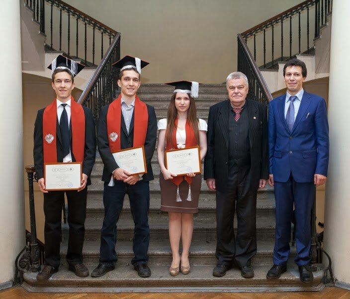

Успехи кафедры
За последние 5 лет больше 15 успешных защит под руководством сотрудников кафедры, в том числе:
- защиты диссертаций на степени Philosophy Doctor (Computer Science) в университете Jyvaskyla, Finland
- защиты диссертаций на степени кандидадата наук по математике
- защиты диссертаций на степени PhD SPbU

Лучшие студенты и аспиранты кафедры регулярно становятся победителями конкурсов на стипендии
- Стипендия президента РФ для обучения за рубежом (15 000 - 20 000 евро)
- Стипендия университета Ювяскюля (COMAS 9000 евро)
- Стипендия FICS (800 евро в месяц)
- Стипендия DAAD для обучения в Германии
Сотрудники кафедры активно публикуют научные результаты в ведущих международных журналах и на конференциях (Г.А. Леонов - больше 100 публикаций за последние три года по scholar.google.com, Н.В. Кузнецов - больше 60 публикаций за последние три года по scholar.google.com)
Выпускники кафедры работают в лучших софтверных компаниях: Яндекс, Oracle, Mail.ru, JetBrains, New York Times, EMC, Спутник, Exigen services и т.д.